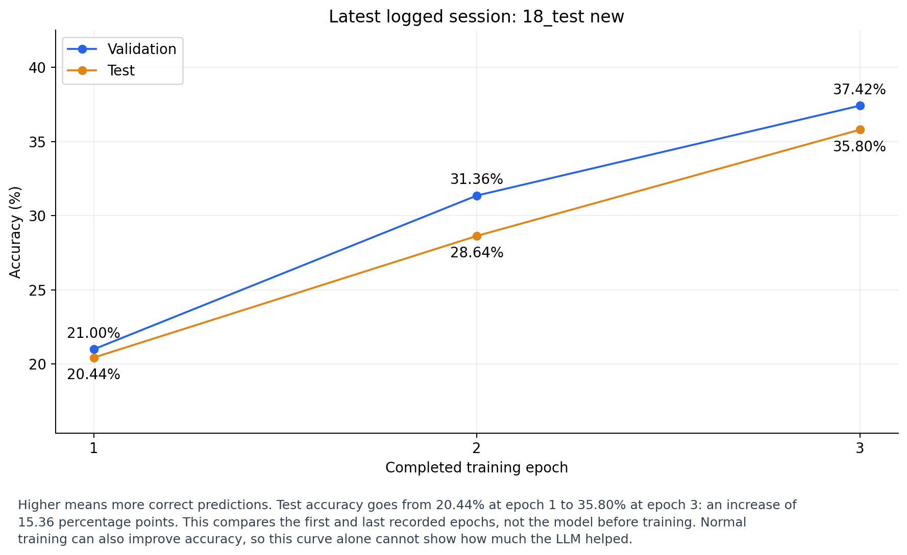
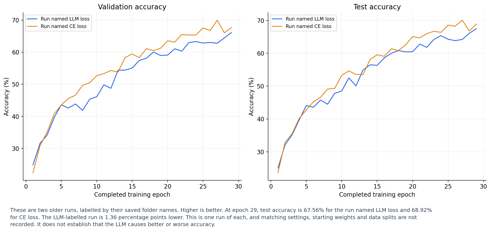
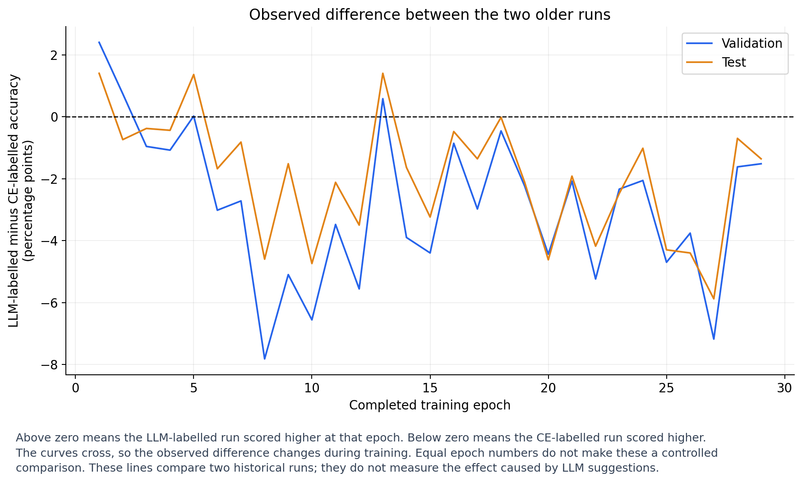

These are observed accuracy changes in saved sessions. There are no saved matched strategy-experiment results, so an accuracy benefit caused by the LLM is not established. Older run names are labels, not verified training configurations. No new training or paid LLM calls were performed.

Higher means more correct predictions. Test accuracy goes from 20.44% at epoch 1 to 35.80% at epoch 3: an increase of 15.36 percentage points. This compares the first and last recorded epochs, not the model before training. Normal training can also improve accuracy, so this curve alone cannot show how much the LLM helped.
PNG · SVG
These are two older runs, labelled by their saved folder names. Higher is better. At epoch 29, test accuracy is 67.56% for the run named LLM loss and 68.92% for CE loss. The LLM-labelled run is 1.36 percentage points lower. This is one run of each, and matching settings, starting weights and data splits are not recorded. It does not establish that the LLM causes better or worse accuracy.
PNG · SVG
Above zero means the LLM-labelled run scored higher at that epoch. Below zero means the CE-labelled run scored higher. The curves cross, so the observed difference changes during training. Equal epoch numbers do not make these a controlled comparison. These lines compare two historical runs; they do not measure the effect caused by LLM suggestions.
PNG · SVG